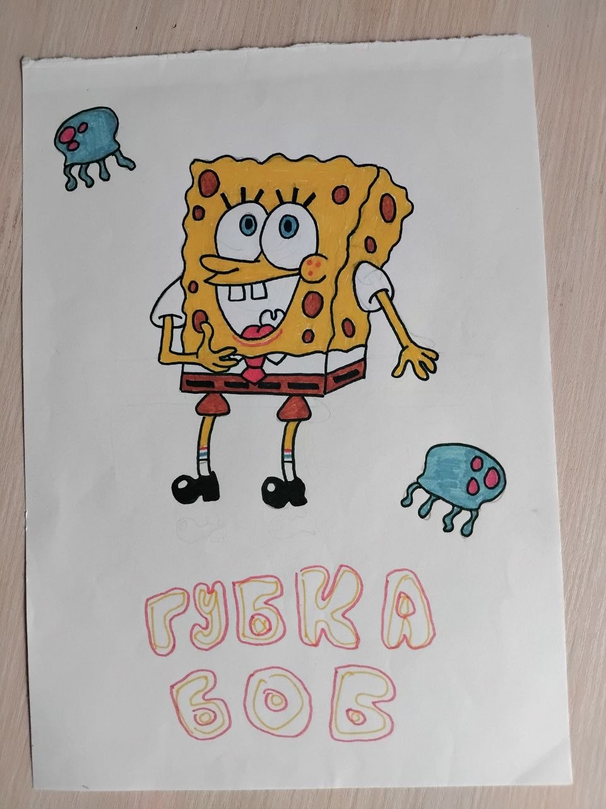
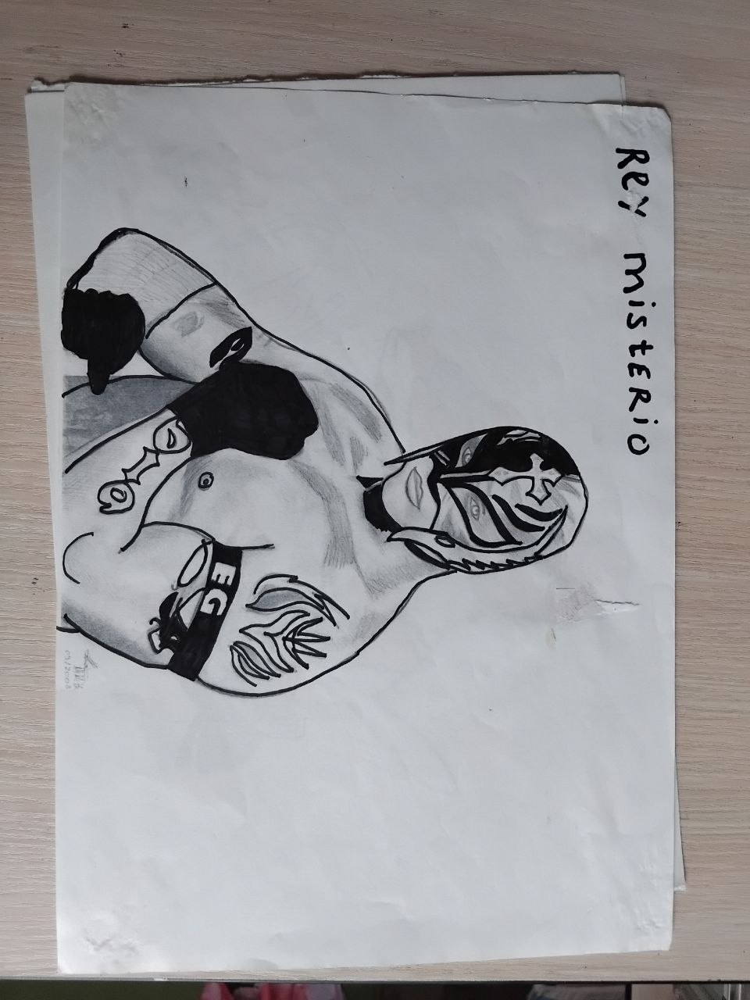

Я Евгений Мельников Юриевич, моя профессия повар, хочу стать программистом, моя мечта изучить IT сферу, которую мне подсказал мой друг Женя Решетняк. Также я люблю путешествовать, люблю технику, историю, обожаю свою семью, своих друзей и в целом пытаюсь жить как достойный человек. Сейчас я прохожу курсы по IT и эта биография именно про это. Хочу рассказать, как у меня проходят курсы, мне очень нравится мой учитель. Я ему благодарен, также благодарен своему другу и вот пытаюсь про себя и про этот момент моей жизни написать статью.
Также хочу еще рассказать про мой YouTube канал
Я стример и
летсплейщик, увлекался играми, гайдами, также записывал сам свои
какие-то интересные истории. И хочу вам про это немножечко рассказать.
Я всегда любил работать с компьютером, работать с программами, такими
как Photoshop, такими как OBS и видеоредакторы, например, Avidem Max.
Поэтому вселенная IT и программирования мне всегда была по душе.
Поэтому я хочу этим заниматься и вот рассказываю про себя.


Страница Контактов
Люблю творчестов Леонаро Давинчи, также хотел научится ресовать, пейзажные картины. Но до них не дошла рука. Потому хочу себя реалезовать, в творчестве создания сайтов Люблю творчестов Леонаро Давинчи, также хотел научится ресовать, пейзажные картины. Но до них не дошла рука. Потому хочу себя реалезовать, в творчестве создания сайтов Люблю творчестов Леонаро Давинчи, также хотел научится ресовать, пейзажные картины. Но до них не дошла рука. Потому хочу себя реалезовать, в творчестве создания сайтов Люблю творчестов Леонаро Давинчи, также хотел научится ресовать, пейзажные картины. Но до них не дошла рука. Потому хочу себя реалезовать, в творчестве создания сайтов Люблю творчестов Леонаро Давинчи, также хотел научится ресовать, пейзажные картины. Но до них не дошла рука. Потому хочу себя реалезовать, в творчестве создания сайтов Люблю творчестов Леонаро Давинчи, также хотел научится ресовать, пейзажные картины. Но до них не дошла рука. Потому хочу себя реалезовать, в творчестве создания сайтов Люблю творчестов Леонаро Давинчи, также хотел научится ресовать, пейзажные картины. Но до них не дошла рука. Потому хочу себя реалезовать, в творчестве создания сайтов Люблю творчестов Леонаро Давинчи, также хотел научится ресовать, пейзажные картины. Но до них не дошла рука. Потому хочу себя реалезовать, в творчестве создания сайтов
Наверх